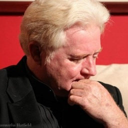

Author · Playwright · Founder
Greer Firestone
The work of a Renaissance man—stories shaped by history, memory, music, and experience.
Memoir
My Life as an Edsel
Driven by Ego. Derailed by Irony. Redeemed by Endurance.
A humorous journey through an extraordinary American life—from the upheavals of the
1960s and a six-month odyssey through Europe to entrepreneurial triumphs, spectacular
reversals, theater, politics, and reinvention.
Available through your local bookstore and Amazon.
Historical Novel · Second Edition
Alexei and the Mad Monk Rasputin
Delaware Press Association Award Winner
The compelling story of Tsarevich Alexei Romanov, his battle with hemophilia, and the
mysterious Siberian mystic whose influence over the Imperial Family helped change the
course of Russian history.
Available through your local bookstore and Amazon.
Original works by Greer Firestone
Broadway Musical Theatre
Original books and dramatic storytelling meet the great songs of the American Songbook,
performed by the legendary personalities who defined their eras.
Musical Theatre
Judy Garland: “World’s Greatest Entertainer”
20 American Songbook classics celebrating Judy Garland, Frank Sinatra and Liza Minnelli.
A theatrical journey through Garland's remarkable life and career, told through story,
humor and the music that made her an American icon.
Available for licensing.
Visit the Judy Garland musical website
Musical Theatre
Gershwin, by George: The 1936 Radio Show
22 Gershwin classics spanning Broadway, opera and the concert hall.
A 1936 radio broadcast comes alive with George Gershwin at the piano and appearances by
Ethel Merman, Al Jolson, Fred & Adele Astaire, Jimmy Durante, Anne Wiggins Brown and
Todd Duncan—celebrating the astonishing range of America's great musical master.
Available for licensing.
Licensing information →
Musical Theatre
Al Capone: The Rat-A-Tat-Tat-Tat Musical
Chicago. Prohibition. Gangsters. Bullets. And music.
Scarface Al Capone and his South Side henchmen face off against George “Bugs” Moran and
the North Side Mob in a musical romp through the outrageous personalities and violent
mythology of Prohibition-era Chicago.
Available for licensing.
Licensing information →